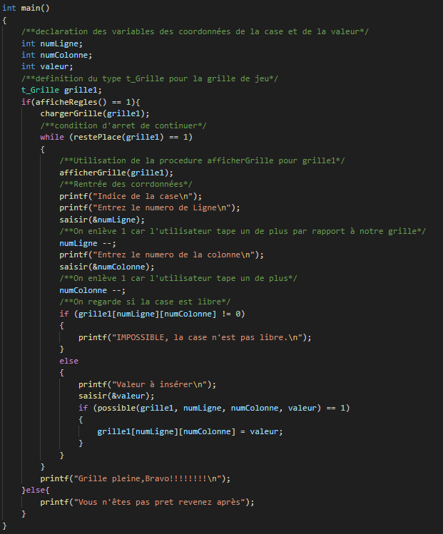

Réalisation
Pour valider cette compétence nous avons du créer un jeu de sudoku jouable dans le terminal
Ce projet a faitt appel à différentes compétences (développement d'un programme) et qualités
personnelles (rigeur, ponctualité)
Pour voir plus en détails les compétences
Développement du jeu
Le jeu du sudoku est un jeu assez complexe qui fait appel à plusieurs compétences en programmation en
langage C
Dans cette partie nous verrons les procédures et fonctions les plus importantes du code ,pour voir plus en détails
Le programme principal

Le programme principal
Le programme principal nous permet de jouer au sudoku grace à l'enchainement des différentes
fonctions et procédures
La fonction possible
La fonction nous permet de savoir si une valeur peut être placée à l'endroit indiqué par
l'utilisateur
Cette fonction est très immortante dans le jeu car elle permet de ne pas commettre de fautes dans la
grille de sudoku
int possible(t_Grille grille, int numLigne, int numCol, int val)
{
int boucleC;
int boucleL;
int correct;
int blocCol;
int blocLigne;
int boucleBlocLig;
int boucleBlocCol;
correct = 1;
boucleC = 0;
while(boucleC ‹ NB_COL && correct == 1){
boucleL = 0;
while (boucleL ‹ NB_LIGNE && correct ==1)
{
if (grille[numLigne][boucleC] == val)
{
printf("La valeur %d est presente sur la ligne %d\n",val,numLigne+1);
correct = 0;
}
if (grille[boucleL][numCol] == val)
{
printf("La valeur %d est presente sur la colonne %d\n",val,numCol+1);
correct = 0;
}
boucleL++;
}
boucleC ++;
}
blocLigne = (numLigne / 3)*3;
blocCol = (numCol / 3)*3;
boucleBlocLig = 0;
boucleBlocCol =0;
while( boucleBlocLig ‹ (NB_LIGNE/3) && correct == 1){
while( boucleBlocCol ‹ (NB_COL/3) && correct == 1){
if (grille[blocLigne+boucleBlocLig][blocCol+boucleBlocCol] == val){
printf("La valeur %d est presente dans le bloc\n",val);
correct = 0;
}
boucleBlocCol++;
}
boucleBlocCol = 0;
boucleBlocLig++;
}
return correct;
}
L'utilisation de différentes boucles permet de parcourir toutes la grille pour voir si une occurence
de la valeur n'est pas trouvée dans ce cas la fonction informe l'utilisateur
Pour voir le programme plus en détails...
Le cahier de tests
Le programme étant fini il faut mainteant le tester via un cahier de tests réaliser au préalable
| Numero du cas |
Données de test |
Résulatats attendus |
Résultats obtenus |
Resultat du test |
| Cas 1 |
Grille4.sud |
chargement de la grille pas de message d’erreur |
à voir |
Oui |
Ce document comme vous avez pu voir l'exemple permet de répertorier tous les tests que nous devions réaliser pour savoir si notre programme fonctionnait